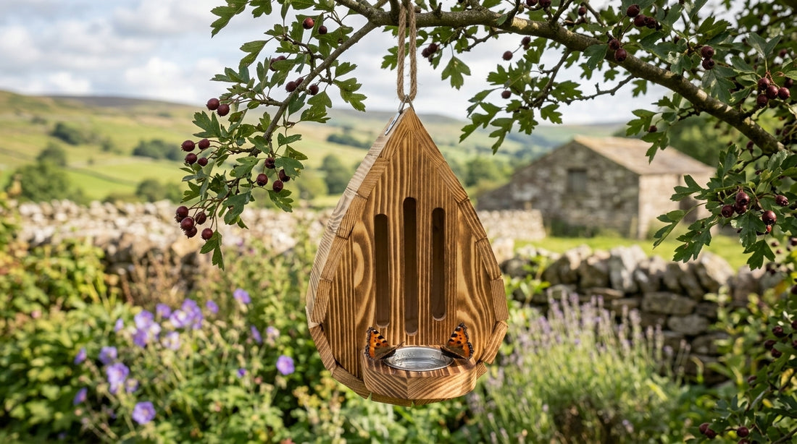
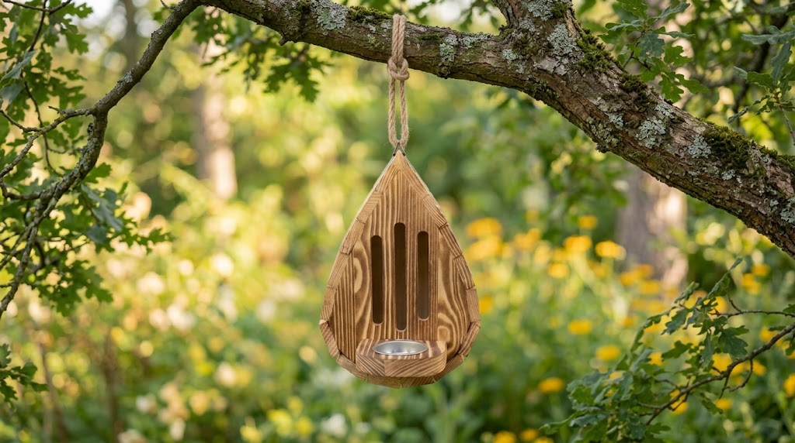
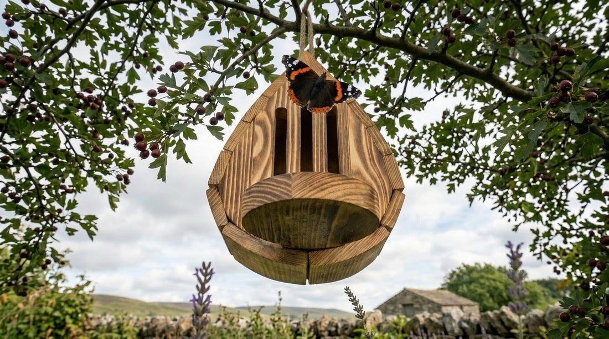
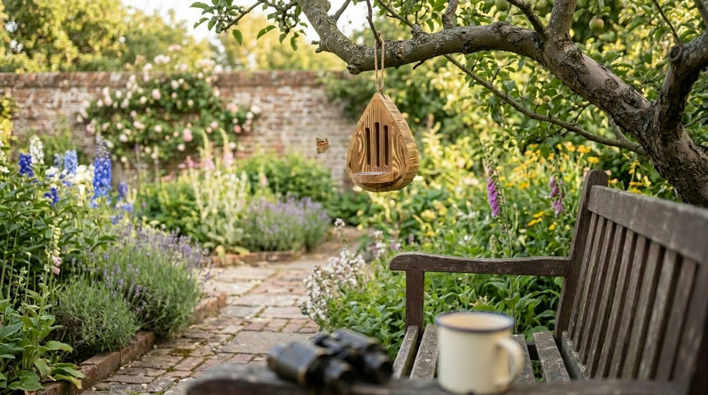

“Butterflies used to fill every hedgerow. Now I go whole mornings without seeing a single one.”
Why a 71-year-old carpenter from the Yorkshire Dales has spent three decades building what butterflies actually need
Most people know butterflies are disappearing. What almost nobody knows is why a garden full of flowers still isn’t enough — and what one quiet observation thirty years ago changed everything for Peggy Holt.
When was the last time you stood in a summer garden and watched a butterfly land — not just pass through, but actually land, stay, settle? Most people can’t remember. They assume it’s still happening somewhere, just not where they happen to be looking. It isn’t. The butterflies are going. And the reason most people give — fewer wildflowers, more pesticides, habitat loss — is true, but incomplete. There’s something else happening in our gardens every summer that almost nobody talks about. Peggy Holt figured it out thirty years ago, standing at her workbench in Wensleydale. She’s been building the same wooden house ever since.
80%
of UK butterfly species have declined since the 1970s — one of the steepest drops of any insect group
17
of 59 UK butterfly species are now on the conservation Red List — at serious risk of extinction
41%
decline in UK butterfly abundance over the past two decades, even in protected nature reserves
1 in 10
gardens provide meaningful habitat for butterflies — despite most gardeners believing theirs does
The peacock. The red admiral. The comma. The small tortoiseshell — that scrap of burnt orange that used to cluster on every buddleia from July onwards. These aren’t obscure species. These are the butterflies of British childhoods, of school nature projects, of Sunday afternoons in the garden. And they are vanishing from the places people know best. Peggy Holt has been watching it happen since before most people noticed it was happening at all.
“my husband built things that lasted. i learned to do the same.”
Everyone in Wensleydale calls her Peggy. She’s 71, with a workshop attached to the side of a stone farmhouse her family has rented for thirty-five years. Her late husband Tom was a joiner — proper old-school joinery, dovetail joints and mortise-and-tenon, nothing from a flatpack. He taught her the basics in their first winter together. “He said: wood moves. If you don’t understand how it moves, everything you build will fight itself apart.” She never forgot it. Tom died eleven years ago. Peggy kept the workshop.
“There were tortoiseshells in every nettle patch. Commas on the ivy. Brimstones drifting through in April like flying primroses. I thought that was just what summer was.”
The butterfly houses came out of a specific summer — dry, hot, relentless. Peggy had planted a full cottage garden by then: lavender, marjoram, verbena, teasel. The flowers were excellent. The butterflies came to feed, circled, and left. They never settled. They never stayed.
“I started really watching. Not just glancing — watching. Where were they going after they fed? What were they doing? And I noticed they kept coming back to one corner of the wall, where there was a damp patch of moss and a bit of sandy soil from where I’d been laying slabs. They were landing there, staying there. Not feeding. Just... absorbing.”
That damp patch of sandy soil was providing something the flowers couldn’t: minerals. Sodium, potassium, calcium — salts that butterflies need for reproduction and flight that they can’t get from nectar alone. The behaviour has a name: puddling. And in a tidy garden with paved surfaces and weed-free beds, there is nowhere left to do it.
“I’d given them a feast and forgotten they also needed a drink. And not just any drink.”

Peggy’s teardrop house, hanging from a hawthorn in her Wensleydale garden. The small tray at the base is not decorative — it’s the feature thirty years of watching told her mattered most.
“most butterfly houses are decoration. i’m not interested in decoration.”
Peggy doesn’t soften it. “Walk into any garden centre and look at what they’re selling. Pretty boxes with a slot cut in them and a picture of a butterfly on the front. Nobody’s thought about what a butterfly actually needs. They’ve thought about what looks nice on a shelf.”
What she’s observed over thirty years:
What she learned in over 30 years of watching
Slot width is everything — and almost nobody gets it right
Most commercial houses have slots that are either too wide (letting in birds and predators, making the space feel unsafe) or too narrow (butterflies can’t enter comfortably). Peggy spent years watching which widths were used and which were avoided. The current slot width is the result of that — not a guess, not a standard measurement.
No puddling station means almost no butterflies
A butterfly house without a mineral water source at the base is like a bird bath with no water. Butterflies need to puddle — to absorb dissolved minerals from damp ground or sand. Without this, most species will visit briefly and move on. The small tray built into the base of Peggy’s house is the single feature she considers non-negotiable.
Varnish and sealant drive butterflies away
Chemical smell from treated wood is a deterrent. Butterflies have olfactory sensors far more sensitive than humans — what smells faintly of varnish to us reads as a warning signal to them. Peggy uses only untreated natural wood. It weathers, it greys, it eventually looks like it grew there. That’s the point.
Shape determines stability — and stability determines use
A house that swings heavily in wind will be abandoned. Butterflies are precise creatures — they return to the same perch, the same angle of light. The teardrop form Peggy settled on decades ago is aerodynamically stable. Her oldest house has hung from the same hawthorn branch since 1997. It has never blown down.
If you can’t clean it properly, it becomes a problem
A butterfly house that can’t be fully opened and scrubbed becomes a habitat for mites and parasites. Peggy’s houses have a full-access back panel. No tools needed. Open, wipe, refill the puddler, close. Two minutes.
“I didn’t design any of this from a book. I watched. Summer after summer. I moved houses around the garden. I changed the slot width by a millimetre and watched what happened. I added the puddler tray and watched what happened. The garden told me what worked. I just wrote it down in wood.”

No varnish, no sealant. The wood weathers naturally — within a season it looks as though it’s always been there.
Tom sketched the teardrop form on a scrap of brown paper one evening in their first winter together. He was thinking about a birdhouse — something aerodynamic, something that wouldn’t catch wind the way flat-sided boxes do. Peggy adapted it. Made the sides narrower, the cavity shallower, the entry slots vertical rather than round. The teardrop stayed.
“Thirty years and I’ve never felt the need to change the silhouette. Everything else I’ve evolved — the slot, the puddler, the panel, the wood. But the shape? The shape was right the first time.”
In thirty-two years, Peggy has built more than three thousand houses. Every one cut, fitted, and assembled by hand in the stone workshop behind the farmhouse. Every one with the same slot calibration. Every one with the puddler at the base. “I know every dimension without measuring. My hands know it.”
Her granddaughter Rachel noticed the reaction last summer — friends asking at the garden gate, neighbours stopping on the lane. “She set up the online shop without really asking me,” Peggy says. “I didn’t argue. If the houses find gardens, that’s the right outcome.”
why this is the last batch
With age Peggy feels pain in both hands when making each ButterflyHouse. The fine work — fitting the back panel, calibrating the slots — has become painful in a way that can’t be pushed through. She built through last winter at a slower pace, resting more than working.
What’s on the shelf now is what’s on the shelf. When these are gone, there will be no further production. The workshop will stay — she’s not ready to give it up entirely — but the houses require precision that her hands can no longer sustain reliably. “I’d rather stop than make something I’m not satisfied with.”
To make sure every last house finds a garden before the summer season, Peggy is releasing the remaining stock at a significant reduction. This is not a sale. It’s a closing.

what customers are saying:
Karen P.
“Put it up in the garden on a Wednesday. By the following Sunday I’d had a red admiral and two commas using the puddler tray. I’ve had a butterfly house from a garden centre for three years — not once did I see a single butterfly use it. The difference is night and day.”
33
Jodie C.
“Bought one for my mother for her birthday — she’s 74 and has kept a wildlife garden in Shropshire for forty years. She rang me the morning it arrived. Said it was the most thoughtful thing anyone had given her in years. She’s already ordered a second one for by the greenhouse.”
12
Mark T.
“The craftsmanship is genuinely exceptional — you can see immediately this was made by hand, by someone who knows wood. One of the slot edges has a tiny variation in the grain that gives it real character. The puddler tray was an unexpected detail I hadn’t noticed from the photos. That’s the thing that convinced me it was designed by someone who actually watches butterflies.”
9

Peggy at her bench in the Yorkshire Dales — thirty years of watching, building, and getting the slot width right by a single millimetre
“in winter i build. in summer i belong to the garden.”
Peggy works through the cold months — October to March, when the workshop is warm from the log burner and the garden is dormant. Summer is for watching. She doesn’t pick up a saw between May and September.
“Winter is when I think about what I want to change. I sit with a cup of tea and replay what I saw in the summer. A house that wasn’t getting used — why? A slot that seemed to be working well — why exactly? I work it out slowly and then I build it in.”
This winter was different. Slower, more painful. The arthritis dictated the pace. But she finished what she started. “I’m happy with them. Every one of them. If I wasn’t happy with them I wouldn’t let them go.”
100% Money-Back Guarantee
Hang it in your garden. Fill the puddler. Watch what comes. If you’re not convinced — by the quality, the craft, or the results — return it for a full refund. No questions. Peggy has spent thirty years giving these away to people she trusted. The guarantee reflects that.